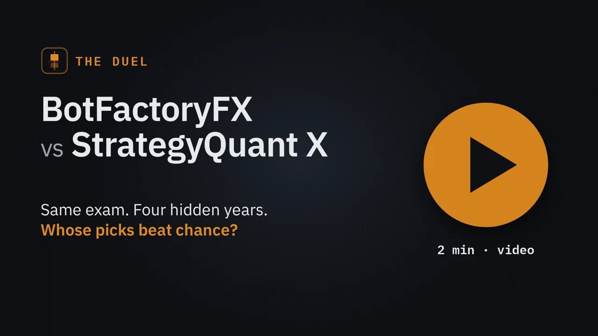

Las reglas
Ocho mercados, todos en velas diarias: el Nasdaq 100 (dos veces, con fechas de corte distintas), el S&P 500, el Dow, el DAX, el oro, el EURUSD y el GBPJPY. Para cada uno elegimos una fecha de corte, el 26 de septiembre de 2022 en casi todos. Los dos programas sólo podían usar los precios de antes. Todo lo de después, hasta julio de 2026, quedó escondido: casi cuatro años que ninguno de los dos vio.
Cada uno trabajó a su manera. StrategyQuant X usó las plantillas del propio fundador: media hora construyendo en cada mercado y después su cadena de pruebas de robustez. BotFactoryFX usó su piloto automático: veinte búsquedas por mercado, unas 48.000 candidatas, y cada finalista puntuada sobre 100 por su juez. Los dos pagaron los mismos costes por operación.
¿Cómo se sabe si una elegida valía algo?
«Ganó dinero» no basta. El Nasdaq se dobló en esos cuatro años, y casi cualquier cosa que comprara ganó dinero. Así que usamos una vara más dura: el azar.
Para cada estrategia tomamos sus operaciones reales en los años escondidos y construimos 500 gemelas al azar: el mismo número de operaciones, la misma dirección y la misma duración, pero entrando en días al azar. Si la estrategia lo hizo mejor que la mayoría de sus gemelas, batió al azar. Quien opera tirando una moneda bate al azar más o menos la mitad de las veces, así que el 50 % es la raya que hay que pasar.
Primer resultado: cero a cero
Con cada programa usando su método completo, ninguno aprobó ni una estrategia en ninguno de los ocho mercados. StrategyQuant X construyó entre 16.000 y 38.500 estrategias por mercado, y cada paso de su cadena dejaba pasar menos hasta que no quedó nada. El veredicto más exigente de BotFactoryFX, 75 o más sobre 100 y aguantar otra vez en un mercado hermano, como el S&P para el Nasdaq, tampoco dejó pasar nada.
Un cero a cero dice que los dos listones están altos. No dice cuál de los dos programas elige mejor. Así que le dimos la vuelta al duelo.
El mismo examen para los dos
Le pusimos a StrategyQuant X el examen que pone el juez de BotFactoryFX, prueba por prueba, hecho con las herramientas del propio StrategyQuant X. ¿Sigue ganando en los años sobre los que no se construyó? ¿En un mercado parecido? ¿En velas de 4 horas? ¿Pagando más por operación? ¿Con sus operaciones barajadas, con los precios movidos un poco, con sus parámetros movidos un poco? Y su propio walk-forward. Después, fuera del programa, las comprobaciones que no tiene: mejor que el azar, operaciones suficientes y regularidad de un periodo a otro.
Ahora sí aprobó estrategias: 36 en los ocho mercados. Del lado de BotFactoryFX miramos más allá de su veredicto más exigente: todas las estrategias a las que su juez puso 45 o más. Ésas no están aprobadas. BotFactoryFX las llama cerca del listón y las manda a cuarentena, a correr con precios nuevos antes de que nadie arriesgue dinero en ellas.
Lo que aprobó StrategyQuant X batió al azar el 56 % de las veces, 20 de 36: apenas por encima del 53 % de todo lo que guardó al construir. Lo que BotFactoryFX puntuó con 45 o más batió al azar el 65 % de las veces, 91 de 140, con los stops tal como se juzgaron. Con stops que siguen la volatilidad, más anchos cuando el mercado se mueve mucho y más estrechos cuando está tranquilo, que es como BotFactoryFX manda hoy una estrategia a cuarentena, fue el 80 %.
En una frase: StrategyQuant X aprueba más; lo que señala BotFactoryFX acierta más. Pero fíjate en dónde está esa ventaja. De las 140 de BotFactoryFX, 134 sacaron entre 45 y 74, la franja del medio. Sus notas más altas, 75 o más, fueron sólo seis. Las seis batieron al azar con los stops tal como se juzgaron, y seis son muy pocas para apoyarse en ellas.
Depende del mercado
No fue un paseo. En el S&P 500, las 13 aprobadas de StrategyQuant X batieron al azar 12 veces, el mejor resultado de todo el duelo, por delante de las 18 de 24 de BotFactoryFX con los stops fijos. En el Nasdaq, StrategyQuant X se quedó en 7 de 21. BotFactoryFX tuvo también su mal mercado: el Nasdaq con el corte de 2019, donde lo que eligió batió al azar sólo 2 veces de 14 con los stops fijos, y 14 de 14 cuando los stops siguieron la volatilidad.
Mercado a mercado
| Mercado | StrategyQuant X, aprobadas | BotFactoryFX, 45 o más | … stops que siguen la volatilidad |
|---|---|---|---|
| Nasdaq 100, corte de 2022 | 7 de 21 | 4 de 8 | 4 de 8 |
| S&P 500 | 12 de 13 | 18 de 24 | 23 de 24 |
| Nasdaq 100, corte de 2019 | 0 de 1 | 2 de 14 | 14 de 14 |
| Oro | ninguna aprobada | 21 de 23 | 22 de 23 |
| EURUSD | 1 de 1 | 9 de 13 | 9 de 13 |
| Dow | ninguna aprobada | 7 de 15 | 7 de 15 |
| DAX | ninguna aprobada | 18 de 23 | 19 de 23 |
| GBPJPY, corte de 2020 | ninguna aprobada | 12 de 20 | 14 de 20 |
| Los ocho | 20 de 36 | 91 de 140 | 112 de 140 |
Tres tropiezos por el camino
Un duelo justo necesita a los dos contendientes bien preparados. Por el camino fallaron tres cosas, y las arreglamos antes de contar.
- Un error nuestro: el diferencial de otro mercado. La prueba de mayor precisión de StrategyQuant X lleva un diferencial fijo en su configuración. La plantilla estaba hecha para el Nasdaq y copiamos su número en todos los mercados, lo que en el EURUSD era un diferencial de 1.503 pips. Lo rechazaba todo, claro. Lo vimos, lo arreglamos y repetimos la ronda entera.
- Velas semanales que no eran semanales. Una prueba vuelve a pasar cada estrategia por velas semanales. En diez años hay unas 520 velas semanales, y aun así en esa prueba las estrategias hacían entre 6.151 y 163.872 operaciones. Corriera sobre lo que corriera, no eran velas semanales, así que quitamos esa prueba.
- Un walk-forward que leía porcentajes como días. La prueba de walk-forward fallaba con un error. La plantilla describía sus ventanas con un ajuste que StrategyQuant X no reconoce, y las leía como días en vez de como porcentajes. Bien puesto, funcionó, y dejó pasar el 92 % de las estrategias que le llegaron.
Nada de esto se ve desde fuera. Son ajustes, y los resultados dependen de ellos. Ésa es una lección en sí misma: una prueba de robustez vale lo que vale su configuración.
Lo que costó
En los cinco mercados en que medimos a los dos, StrategyQuant X gastó entre 43 y 82 veces más tiempo de procesador que BotFactoryFX, y entre 25 y 31 veces más memoria. En un portátil, BotFactoryFX hizo el mismo trabajo en menos de seis minutos, también con medio giga.
Lo que esto no demuestra
- BotFactoryFX lo hicimos nosotros, y el duelo también. El examen es el de nuestro juez. StrategyQuant X corrió con las plantillas de un trader, no con la mejor configuración que nadie pudiera montar. Te contamos los errores que encontramos, y aun así léelo como una medida nuestra, no neutral.
- Es un solo tramo de tiempo, de 2022 a 2026, y casi todo con el mercado subiendo. Lo que compra lo tiene más fácil.
- Las estrategias de cada lado se parecen entre sí, así que 140 o 36 son menos apuestas independientes de lo que parece.
- Ninguna de estas estrategias ha demostrado nada con dinero de verdad. Batir al azar en años escondidos es una buena señal, no un veredicto.
La prueba de verdad ya ha empezado
El 19 de octubre de 2026 pusimos a los dos en cuarentena en el S&P 500: las 13 aprobadas de StrategyQuant X y las 24 estrategias de BotFactoryFX con 45 o más. Cada una corre con el motor de su programa, sobre los precios que llegan desde ese día, y cada semana se miden las dos con la misma vara. Cada sábado por la mañana el marcador sale en la página del duelo en directo, vaya quien vaya delante.
Antes de empezar probamos el montaje en las siete semanas desde el 1 de septiembre, que tampoco había visto ninguno de los dos. Las de BotFactoryFX ganaron en las 23 que operaron; las de StrategyQuant X, en 2 de las 12 que operaron. Léelo con cuidado: una o dos operaciones cada una, y muchas de ellas la misma operación el mismo día. Es un vistazo, no un resultado.
Después empezó la cuarentena de verdad, y su primera semana fue al revés: hasta el 23 de octubre, 1 de las 6 estrategias de BotFactoryFX que habían operado batió al azar, frente a 6 de 7 de StrategyQuant X. La segunda le dio la vuelta otra vez: hasta el 30 de octubre, 22 de 22 frente a 4 de 11. Detrás de las 28 operaciones de BotFactoryFX sólo hay 5 distintas, porque sus estrategias se parecen mucho entre sí, frente a 11 distintas en las 18 de StrategyQuant X. Dos semanas no deciden nada. La página del duelo en directo lleva cada semana según sale.
Corregido el 1 de noviembre de 2026. La primera versión de este artículo daba a StrategyQuant X 2 de 7 en la primera semana y 6 de 11, con 14 operaciones distintas en 21, en la segunda. Los precios de su cuarentena se habían cargado con tres horas de desfase desde el 19 de octubre, así que sus velas diarias cerraban a destiempo; los volvimos a cargar y medimos otra vez las dos semanas. Las cifras de BotFactoryFX no cambiaron.
Cambiado el 4 de noviembre de 2026: 13 contra 13. Desde ese día el duelo en directo juega con 13 estrategias por lado: BotFactoryFX, con las 13 a las que su juez puso más nota de esas 24, la que les dio antes de empezar el duelo. Contado así, BotFactoryFX bate al azar en 1 de 2 la primera semana y en 12 de 12 la segunda. Las cifras de StrategyQuant X no cambian, y las 15 operaciones de BotFactoryFX siguen siendo sólo 5 distintas.
De dónde salen los números
De nuestras propias medidas, del 17 al 19 de octubre de 2026, en un Core i9 de sobremesa: StrategyQuant X, versión 144, manejado desde su línea de órdenes, y el motor de BotFactoryFX en nuestro banco de pruebas. El histórico de precios, de Dukascopy: velas de un minuto para StrategyQuant X, con el día cerrando a la hora de Nueva York, y velas de una hora para BotFactoryFX, con el día en UTC. Años escondidos: desde cada corte (26 de septiembre de 2022; 31 de diciembre de 2019 para el segundo Nasdaq; 31 de diciembre de 2020 para el GBPJPY) hasta el 24 de julio de 2026. 500 gemelas al azar por estrategia. Los costes: el mismo diferencial y el mismo deslizamiento para los dos, sin swap.